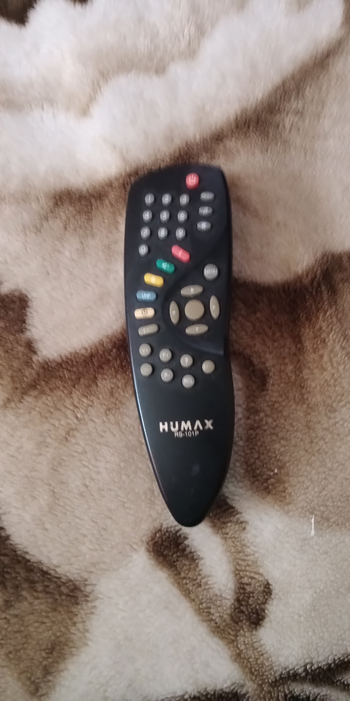

НАЗАД В ПРОШЛОЕ
Назад
Youtube канал
ФОРУМ
ВИДЕОАРХИВ
ИСТОРИЯ НТВ-ПЛЮС
НОВОСТИ
Аналоговые и цифровые ресиверы
NTV PLUS 1000, 2000, 3000 Gals Decoder syster
1.99 каналов
2.LNB - Single
3.3 типа декодирующих сигналов
4.2 SCART-разъема (TV, Decoder)
5.2 уровня яркости
6.Стереозвук с двумя раздельными выходами левого и правого каналов типа "колокольчик"
7.Контроль громкости звука
8.Полнофункциональный дистанционный контроль с индикацией режимов на 2-знаковом индикаторе
9.1 вход IF
10.переключатель 13/18 В, защита от короткого замыкания
XSAT CD.TV300
Возможности:
Прием цифровых MPEG-2 / DVB телесигналов
Демодуляция:
QPSK (квадратурный сдвиг фаз)
Коэффициент коррекции ошибок: 1/2, 2/3, 3/4, 5/6, 7/8
Скорость цифрового потока: 3-31 Mсимв/с
Настройка:
Диапазон частот входного сигнала: 950-2150 МГц
Входной разъем: F
Ширина полосы: 36 МГц
Уровень входного сигнала: -65┘ -25 дБмВт
Управление конвертором:
Питание: 13/18 В (300 мА)
Переключение диапазонов: 0/22 кГц
Соединения:
Вход спутниковой антенны: F
Выход спутниковой антенны: F
Вход наземной антенны: IEC√розетка
Выход ВЧ-модулятора: IEC-вилка
Последовательный порт RS232C: 8-pin Mini-DIN-розетка
Аудио, Видео: SCART TV, SCART VCR
Cтерео-Аудио: два - RCA
ВЧ - видео выход: PAL-K
Каналы: 30-45
Напряжение электропитания: 187-242 В, 50 Гц
Потребляемая мощность: 40 Вт (макс.)
SAMSUNG VDS3300
Возможности:
Прием цифровых MPEG-2/DVB телесигналов
Демодуляция:
QPSK (квадратурный сдвиг фаз)
Коэффициент коррекции ошибок: 1/2, 2/3, 3/4, 5/6, 7/8
Скорость цифрового потока: 2-31 Mсимв/с
Настройка:
Диапазон частот входного сигнала: 950-2150 МГц
Входной разъем: F
Ширина полосы: 36 МГц
Уровень входного сигнала: -65┘ -25 дБмВт
Управление конвертором:
Питание: 13.5/18 В (400 мА)
Переключение диапазонов: 0/22 кГц
Соединения:
Вход спутниковой антенны: F
Выход спутниковой антенны: F
Вход наземной антенны: IEC√розетка
Выход ВЧ-модулятора: IEC-вилка
Последовательный порт RS232C: 8-pin Mini-DIN-розетка
Аудио, Видео: SCART TV, SCART VCR
Видео, Cтерео-Аудио: RCA Video, Audio- L, R
ВЧ - ВИДЕО ВЫХОД: PAL
Каналы: 21-69
Напряжение электропитания: 187-242 В, 50 Гц
Потребляемая мощность: 35 Вт (макс.)
HUMAX VA-FOX
Частотный диапазон 950…2150 МГц
Уровень входного сигнала -25.. -65 дБмВт
Ширина полосы пропускания36 МГц
Переключение поляризации 13,5 В - Вертикальная,
18В - Горизонтальная
Скорость приема данных2…31 Мсимв/с
FEC декодер 1/2, 2/3, 3/4, 5/6, 7/8
Декодер звука MPEG / MusiCam Layer I & II
Режим автопоиска Есть
Автоматическое определение PIDЕсть
DISEqC-переключения1.0, 1.2
Формат видео 4:3, 16:9
Электронный гид Есть
Модуль доступа Встроенный Viaccess
Разрешение видео 720х576
Частота дискретизации аудио 32, 44.1, 48 кГц
Объем оперативной памяти 2 Мб
Объем перепрограммируемой памяти 4 Мб
Выход видео CVBS, RGB, S-VHS
Интерфейс RS232
Скорость передачи 115,200 бит/c
Габариты 260х50х180 мм
Питание 190..250 В, 50..60 Гц
Потребляемая мощность30 Вт (8Вт Stanby)
Вес 1.5 кг

STRONG SRT 4450
| ФУНКЦИОНАЛЬНЫЕ ПАРАМЕТРЫ | | 1. | Типы LNB: Single, Universal | SRT 4350 | SRT 4400 | SRT 4450 | SRT 4375 | | 2. | 1 "колокольчик" +2 СКАРТ-разъема | + | + | + | - | | 3. | 1 "колокольчик" +3 СКАРТ-разъема | - | - | - | + | | 4. | 2 типа IEC — для соединения по "ВЧ" | + | + | + | + | | 5. | 22 кГц тон-сигнал | + | + | + | + | | 6. | Прием данных (апгрейд программного обеспечения) | + | + | + | + | | 7. | Родительский ключ | + | + | + | + | | 8. | Многоязычное экранное меню | + | + | + | + | | (в том числе русский) | + | + | + | - | | 9. | Управление магнитным поляризатором | - | - | - | + | | 10. | 4 аудиополосы (130/180/280/500 кГц) | - | - | - | + | | 11. | Девиация: 4 уровня | - | - | - | + | | 12. | 2 входа IF (1 общий, 1 аналоговый) | - | - | - | + | | 13. | Формирование фаворитных групп | + | + | + | + | | 14. | Встроенный позиционер (32 позиции — аналог, 32 — цифра) | - | - | - | + | | 15. | Поддержка DiSEqC-протокола версии 1.0 | + | + | + | + | | 16. | Количество каналов | 1400 | 1400 | 1400 | 3500 |
|
| | Цифровой | Аналоговый | | U питания | 90-260 В,50/60 Гц | | RF-модулятор | CH 21-69 UNF PAL B/G,I,D/K | | Тип предыскаж. аудиосигнала | - | WagnerPanda,50 мкс,J17 | | Выходной диап. аудиочастоты | - | 20 Гц-20 кГц +-2dB
60 Гц-18 кГц +-0.5dB | | Частотный диапазон I.F. | 950...2150 | 920...2150 | | Ширина пром. частоты IF | 27-55 МГц | 18/27 МГц | | SCPC | есть | - | | MCPC | есть | - | | 13/18 В перекл. | есть | есть | | 0/12 В перекл. | есть | есть | | Скорость приема данных SR, Мсимвол/с | 2-45 | - | | Декодер звука | MPEG/Musicam | - | | Декодер изображения | MPEG-2 | н/д | | DiSEqC | 1.0 | 1.0 | | Стереовыход | есть | есть | | RS-232 | есть | есть | | C/Ku-диапазон | авто | авто | | Порог чувствительности, дБ | н/д | до 3.5 dB | | Режим автопоиска | есть | есть | | Автоматическое определение PID-кодов | есть | - | | Телетекст (VBI) | есть | есть |
|